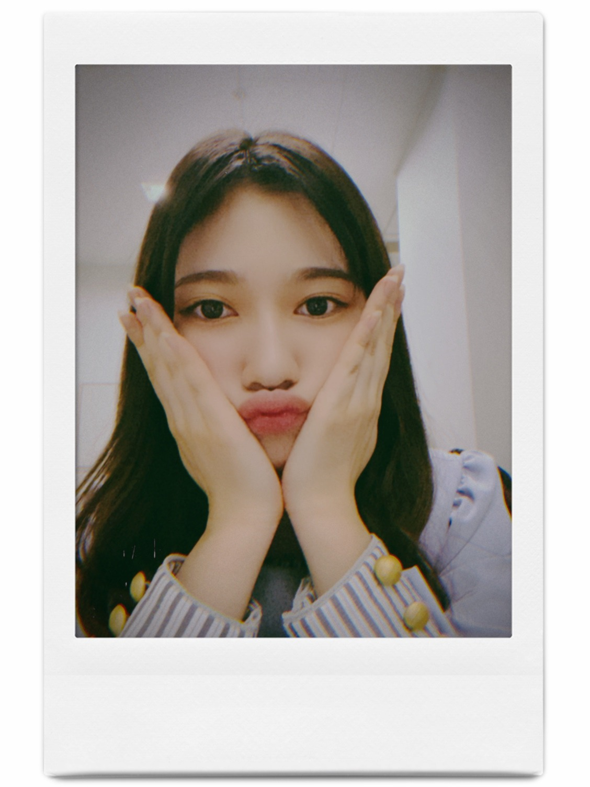
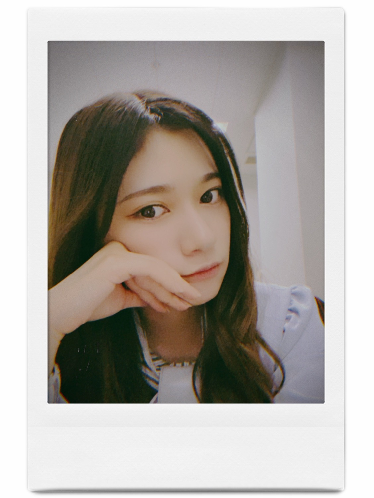
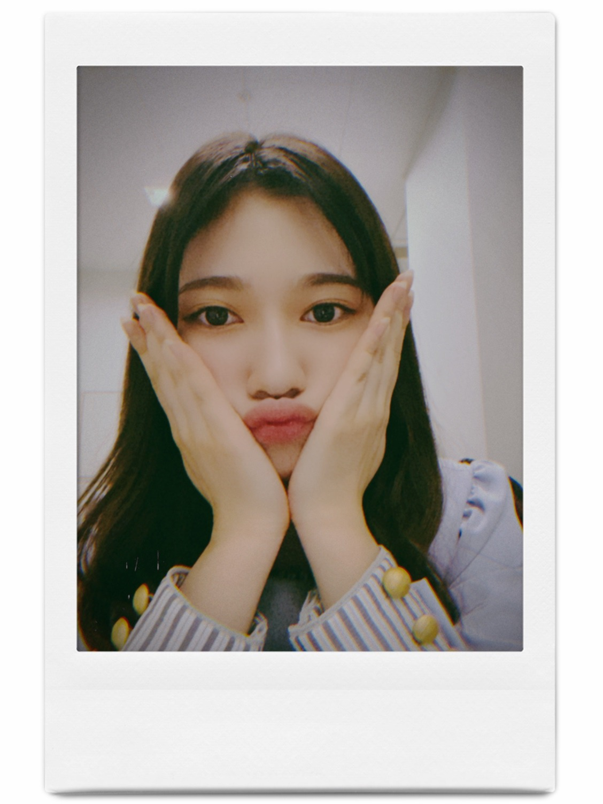
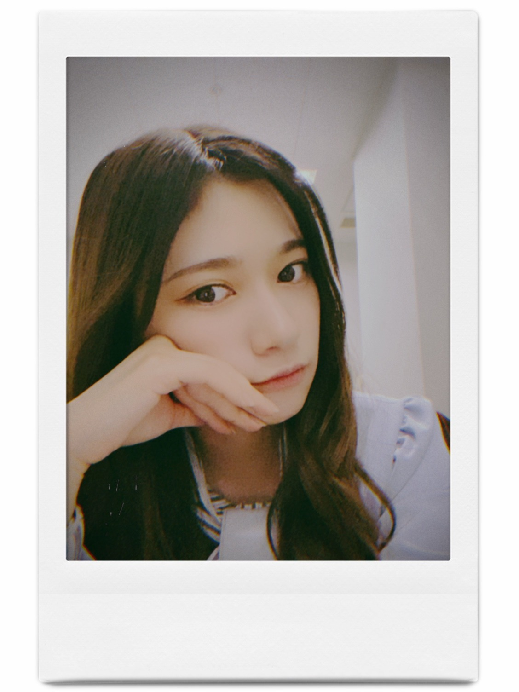

2020/1206Sunライブ頑張れー。☺️
ニュースがとまらんぜが11月で5年目となり
そのタイミングで林ちゃんにバトンタッチという形になりました。
私らしく精一杯活動していたら
お話を頂いた場所でした。
私の独特な視点だったり
当時はまだブログですら個人になりたて
自分を知ってもらえる場所は本当に限られていて
モバメやブログ
ライブでいかに見つけてもらえるか
少ないチャンスの中
更に小さなスポットライトの真ん中に入れるようにと
拙い言葉ではありますが
真っ直ぐ思っていること感じたことを
思うがままに発言してきました。
そしたら、見つけてもらえた場所の１つに
連載がありました。
アイドルとしてはとても異例なことです。
そもそも連載を5年も続けられる事も異例な事でした。
アイドルではあるけど
1人の人間です。
それをテーマに本当に
社会に踏み込んで
ぎりぎりな事を記事にしようとしたり
スタッフさんにも本当にお世話になりながら
無事終われました。
勿論、こんなに続いたのは
ファンの方初め
私の気持ちや考えに賛成してくれる方が
沢山いたからです。
ここでは意見することの大切さ
自分らしく生きていくのはとても大変な事だけど
その時間や行動は宝になるとより感じる事が出来ました。
自分らしく生きていれば必ず味方はいる。
それを肌で実感できる場所でした。
正直、1年で終わるものだと思っていたので
5年間続けられた事
無事に終われた事
想像よりも遥かに長く続けられた事
そして、始めた当初後輩は居なかったですし
グループの中でも下から
数番目くらいの幼い私でしたから
後輩に継げるなんて思いもしませんでした。
とにかく継げるというのは
自分がしっかりと歩めた証拠だと思います。
改めて、ありがとうございました。✨
っということで
4期生のライブがありますね。☺️✨
変なところ人見知りしちゃうけど
陰ながら応援してます。☺️✨
4期生の子からは乃木坂46を大切にしよう
紡いでくれるような雰囲気を感じます。
体調気をつけて頑張ってねー。
って、メンバーってメンバーの
ブログ見てるのかなとか考えつつ
私はメンバーのブログ見るの好きです。
色んなこと知れるから
細かく見るとその子が見える気がして好きです。✨
そんな私も毎日バタバタさせてもらってます。
ライブありますので
そちらもよろしくお願いします。
何年も踊ってるから体に
染み付いてて不思議な気持ちです。
今年は自粛もありファンの皆さんも
私達もですがお互い体力面も考えて
ライブ楽しみましょう。✨
健康と安全が第一なので無理せずいきましょう。✨
 

bye〜✨


コメント(570)
アンダラももう少し〜
頑張ってね
これから先も、蘭世の勢いとまらんぜ！！！
ずっと応援しています
NEWSがとまらんぜ、終わっちゃうのは悲しかったけど後輩に受け継げる仕事があるってほんとに凄いことだと思う！さすが蘭世だなって思う！これからも応援してるね！
早く会いたいー！！
アンダーライブ楽しみにしています
蘭世ちゃんの言葉や考え方は好きです！
アンダラ楽しみにしてます！
4期生ライブ今日だね！
蘭世のコラム楽しみにしていたから少し悲しいけど、
林ちゃんのも読みます！
ほんとにお疲れ様！！！
26thのミーグリ取ったよ！
今シングルもよろしくお願いします！
1月31日に話せるの楽しみにしてる！
アンダーライブの当落で当たること
毎日お祈りしてます！
絶対行くから待ってて！(^^)
年末たくさん忙しいと思うけど、
体調に気をつけて頑張ってください！
いつも笑顔としあわせをありがとう！
だいすき！！！！
あいら。
手紙出してからよかったら読んでください。！
毎回楽しみでした！こちらこそありがとうございました！
瑠奈ちゃんの文章も楽しみですね！
後輩思いなとこ好きだよー、♡♡
蘭世ちゃんの活躍応援します
後輩想いでもある優しいらんらん！
そんなところもすき！^ ^
ミーグリの券取ったから、久しぶりに会えるの楽しみにしてるよーーー！！！
4期のみんなLIVE頑張ってほしいね！
蘭世もアンダーライブ頑張って！アンダーライブ見れないの悲しいな…でも、ミーグリ当たったから嬉しい。
またブログ更新されるの楽しみに待ってるね！
自撮り可愛すぎるよ！
途中から読ませて頂きましたが、とても蘭世先生の感性やら色々伝わるものがあって読んでいてとても楽しかったです。！
終わってしまうのはとても悲しいですが、後輩が受け継ぐということなので楽しみにしたいと思います。
Instagram、190000おめでとうございます！！
見ていてとても癒しになりますし、オシャレですし、ファッションの参考になります！
モバメもいつもありがとうございます。
広島住みの璃音
改めてニュースがとまらんぜ連載お疲れ様でした！
コラムを見る度に蘭世さんの考えや、本音を知ることができました！
今まで世間のニュースに関しては自分1人の考えしか知らなかったですが、蘭世さんのコラムを読むことでまた違った視点の考え方を知ることができたのでホントに読んでて良かったと心から思います
5年も連載が続くのってコラムに限らず本当に凄いことだと思います
漫画でもそれほど長く連載してる物を見たことがありません
改めて本当にお疲れ様でした！
ブログも待ってましたー！
蘭世ちゃんの魂受け継いだ
るなちゃんのコラム、これから楽しみだねー(◜௰◝)
アンダラ、すぅごく楽しみよ
改めてニュースがとまらんぜお疲れ様でした〜
アンダラ楽しみにしてるねー
寺田さんの前向きな、ポジティブな言葉は
ほんとに元気を貰えるし
幸せな気持ちになれるよ
1月のミーグリ、何話そうかな
1年以上会いちゃった〜〜〜
忘れられてるかなぁ（ ; ; ）
とか色々思ってます
今日は短いけどこの辺で
明日からまた仕事頑張れます◎
インスタ質問沢山書いてみました！
楽しみにしてるね〜〜〜
すきやーーーー
ゆうき（ゆっちゃん）
いつも楽しみに待ってます！
蘭世さんはいつも自分らしい答えを出すので
いいと思いました！
また、工事中とかでもやってほしいです！
1＋1=100蘭世さんらしくこれからも頑張ってください！
応援しています！大好きです！
引き続き蘭世の言霊を引き続きお願いします^_^
びーむ！
ありがとうございます^_^
ほうぼうすみません!
アンダラめっちゃ楽しみにしとるね!
ニュースがとまらんぜお疲れ様でした！
蘭世のものの見方、考え方すごく好きです。
体調には気をつけて活動していってくださいね。
アンダラも楽しみにしてます。
あとミーグリも楽しみです。
(*p'∀'q)Fight♡
とまらんぜの連載が終わってしまったことは残念やけど蘭世の意思を継いだ林ちゃんが個性溢れた投稿をしてくれることを願って楽しみにしています林ちゃん頑張れ！
4期生ライブ見れないけど頑張れ！
蘭世もライブに向けて無理のないように体調には気おつけてね！
蘭世ファイトー！
ユンです(^^)
今日も楽しんでる？
ぼくは今寮に向かってます！
週末にはいつも実家に帰って家族と過ごすと約束したからね
そして昨日はぼくの誕生日だったから
家族みんなでケーキも食べたり、一緒に冬着をプレゼントとして買いに行ったりして
すごく楽しい、そして家族の愛を感じた１日だったな！
そして友達もたくさんお祝いしてくれてて
久しぶりに友達とラインでやりとりができたり
すごく楽しかった！
らんぜも良かったら、２４歳のぼくも頑張っていけるように祝って欲しいな！
そうそう、そしてミーグリも無事に取れました！
財政悪化で多くは取れなかったけど、少しでもらんぜと顔見ながら話したかったからね！
短い時間ではあると思うけど、どうぞ宜しく！
そしてnewsがとまらんぜ、無事にバトンタッチできたね！
なんか変な気分です。
毎週チェックしていたものがひとつ減ったと思うとちょっと残念だなーと思っちゃうけど
やっぱ５年も続けたことはすごいことで、当時はほぼ末っ子だったらんぜが自分から取ったチャンスをまた後輩に任せるようになったなと思うと本当にらんぜのことが誇らしくて
もっと連載して欲しかったけど、悔いはない！って感じかな
るなちゃんも言葉がらんぜと似てるところがあって
きっとうまくやってくれると思うよ！
そして４期生ライブもみんな頑張ってほしいな
アンダーライブももうすぐじゃん！
めちゃめちゃ楽しみにしてるからね！
最高な年末にしようねー
ポラロイド風の写真も可愛いしお洒落！！
では、今日はこの辺で。
またねー！
ユン
ニュースがとまらんぜが終わったのは悲しいけどその分インスタとブログを楽しみにしてる！
蘭世のペースで良いから色んな話を聞かせてください！
いつも応援してます!
インスタの質問答えて欲しいな〜
アンダラは絶対見るよ！安全第一で過ごしてください！
アンダラ申し込んだよー！
頑張ってねー！
負けるな林ちゃんにも期待だね(^o^)工事中でも紹介されてたけど、蘭ちゃんの視点から意見や発言、すごく共感もできました！林ちゃんも含め、4期ちゃんたちも暖かく見守ってあげてね☆2期生ライブも実現できることも祈ってるよーッ！アンダラもまだ抽選結果はわからないけど、今年最後のライブにもなるのかな？こげん時期だからこそ、乃木坂の歌は必要だし、何よりも元気になる！！日本はもちろんのこと、世界中を元気にさせてあげてね(≧∇≦)また何かしらの企画ができるといいやね〜♪
連載5年間お疲れ様でしたね、情報発信の方法が多様化して、インスタだったり、tiktokだったり、YouTubeでコンテンツを持ったり、ここ数年で様変わりしてると思います。こんなに移り変わりの激しい中5年間は凄いと思います。自分は先が見通せる才能はないので、何が始まって何が終わるのかとか予想もつきませんけど、4期生みたいな子達がのびのびと活動出来たら良いなと思います。
おやすみ
楽しみにしてたコラムでした
(^o^)
今月は誕生月
祝ってね
ニュースがとまらんぜお疲れ様でした！
普段あまりテレビも付けず、ニュースに疎い自分でしたが蘭世さんの連載を見て最近はこんなこともあるんだなーなんて思いながらいつも見てました。
蘭世さんの目線でニュースについて考えたり素直に意見を言う連載は見ていてとても面白かったし勉強にもなりました！
本当にお疲れ様でした！！
今日は4期ラですね！
自分は仕事で見れませんが感想を友達に聞いたりするのがたのしみです！
どんなライブになるかなんで全くわからないけどいいことには間違いないですもんね！
怪我なく無事終了し、このライブがみんなの心を動かす良い機転になれば良いなーなんてね(誰やねん)
蘭世さんの楽しそうに踊ってる姿も真剣に踊ってる姿もちゃんと見てますよ
いつも元気をありがとう！！
蘭世さん大好きだよ！！
後輩のことも気をつかえる先輩。
いい先輩だー✨
そんならんぜも好きです！
健康に気をつけて
これからもがんばってーー
蘭世見えるの楽しみです♪
ニュースがとまらんぜ5年間お疲れ様！
らんぜの視点らんぜの文章好きだから、終わるとちょっと悲しいです。
アンダーライブの稽古頑張って！
体調も気をつけてください！
ブログ・モバメ・インスタ等々有り難うございます。
私は今、遅めの就職活動中なのですが大学の卒業に向けての課題もあり、忙しくさせてもらってます。学生生活ラストの年に、コロナのこともあり大変な思いや挫けそうになりそうなことも有りながら友人や蘭世さんたちの存在に元気をもらっています。
今はまだ厳しそうですが、バッチリ進路を決めてイベントに参加させてもらいます。
本音を言うと早く会いたいです。笑
またコメントしますね。!!!
今までもこれからも蘭世の勢い止まらんぜで！
熱い魂、大好きでございます！
NEWSがとまらんぜ
決まった時は凄く嬉しかったね
蘭世が言ってる通り
こんなに続くと思ってなかったし
後輩に引き継げるほどの
コンテンツになるとは思ってなかった
楽しみにしてたものが
終わってしまうのは寂しいけれど、
インスタもそうだし
また新しい蘭世を表現出来るものに
出会えるよう期待しています！
アンダーライブ楽しみ！
（こ・っ・ぺ）
蘭世さんの連載、蘭世さんの思いがストレートに伝わってきて毎回楽しみにしていました！蘭世さんの言葉はスッと心に入ってくるのでとても大好きです！
ミーグリ、申し込みました！よろしくお願いします！お話しできるのを楽しみにしてます！
蘭世さん、こんにちは。更新ありがとうございます
まさしく乃木坂らしさですね！
変わりたい部分もあるけれど、変わりたくない部分もある。蘭世さんにも、このような気持ちってありますか？大人になっても、子供っぽさもがあればいいなと笑 アンダーライブでは、蘭世さんらしいパフォーマンスで、何より楽しんでくださいね！年末近くは、忙しくなると思いますが、健康第一で！
コメントする